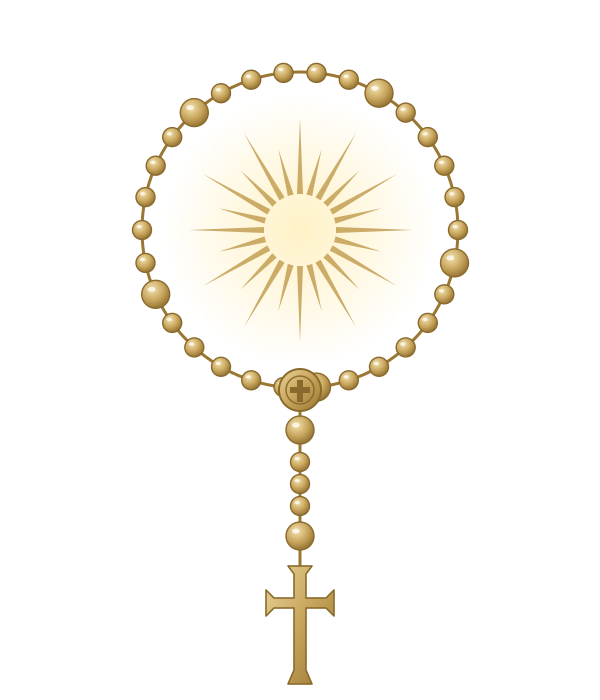

A quem caminhou comigo
Esta hístoria também
tem os seus nomes.
Nem todos que mudaram a minha caminhada estavam na igreja. Esta página é o meu obrigado a cada pessoa que fez parte dela.
Minha gratidão
Deus também age através das pessoas.
Nem todo encontro acontece dentro da igreja. Às vezes, uma conversa, uma ideia ou um gesto simples muda o rumo de tudo.
Aqui estão as pessoas pelas quais eu agradeço dentro e fora da fé.
Rostos da caminhada
Por vocês, minha gratidão.
Uma galeria afetiva para transformar lembranças em testemunho.
Nome da pessoa
Escreva aqui uma pequena dedicatória e a graça que esta pessoa representa.
Nome da pessoa
Escreva aqui uma pequena dedicatória e a graça que esta pessoa representa.
Nome da pessoa
Escreva aqui uma pequena dedicatória e a graça que esta pessoa representa.
Uma oração por vocês
“Dou graças ao meu Deus todas as vezes que me lembro de vós.”Filipenses 1,3
Memória e presença
O amor recebido também se torna missão.
Use este último espaço para escrever uma dedicatória geral, uma oração ou uma mensagem para todas as pessoas reunidas nesta página.
Com carinho, Kevin Alves.